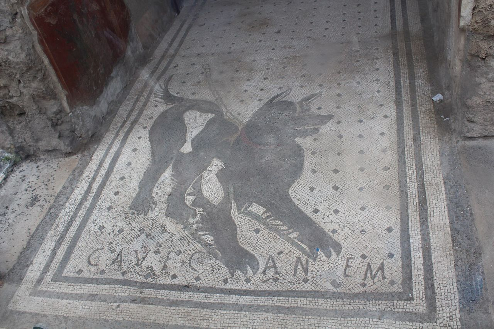
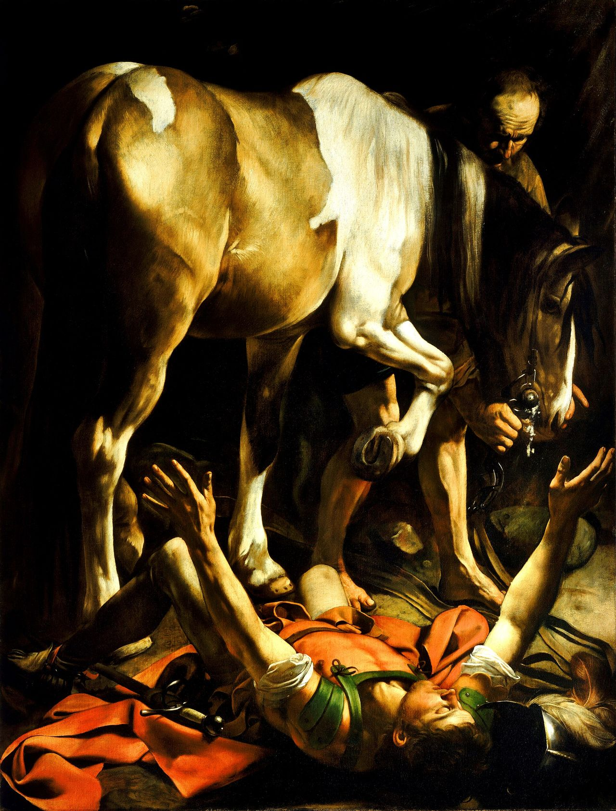

EBD Jovens · 8 de novembro de 2026 · Filipenses 3.1 a 11
Lição 6Guardando-se dos falsos mestres
Sentinelas na muralha
Três vezes seguidas, Paulo grita como um vigia: "Guardai-vos!" E depois mostra o que vale mais do que tudo o que ele tinha.
Teste rápido
Responda só para você
Tenho o hábito de conferir tudo o que ouço à luz da Bíblia?
Minha fé está fundamentada em experiências ou na Palavra de Deus?
Tenho buscado crescer pela oração e pelo estudo bíblico?
Consigo identificar quando uma mensagem contradiz as Escrituras?
Como vamos estudar
Sete postos
Filipos era cercada por muralhas, e lá no alto havia sentinelas. Hoje a aula é uma ronda por sete postos de vigia.
Os quatro primeiros mostram o perigo. Os três últimos mostram a defesa: o que Paulo tinha, o que ele largou e quem ele ganhou.
Revista, Interação: o objetivo de Paulo "não era gerar medo ou desconfiança generalizada, mas despertar discernimento espiritual".
1A muralhao cenário
2Lobos com pele de ovelhana história
3Guardai-vos!Fp 3.1 e 2
4Agradam, seduzem, destroemas falsas doutrinas
5A verdadeira circuncisãoFp 3.3
6O balanço de PauloFp 3.4 a 8
7Conhecê-loFp 3.9 a 11
A muralha de Filipos subindo o monte
Posto 1 · A muralha · o cenário
A muralha
Filipe II, pai de Alexandre, fortificou a cidade depois de 356 a.C.
As muralhas subiam o monte até a acrópole, o ponto mais alto.
A colônia romana manteve as muralhas macedônias. Elas ainda estavam de pé quando Paulo chegou.
Muralha sem sentinela não protege: alguém precisa ver o perigo e avisar.
Posto 1 · A muralha · o cenário
O atalaia
"Mas, se, quando o atalaia vir que vem a espada, não tocar a trombeta, e não for avisado o povo [...] o seu sangue demandarei da mão do atalaia."Ezequiel 33.6
Paulo, o vigia"Não me aborreço de escrever-vos as mesmas coisas, e é segurança para vós" (Fp 3.1). Repetir um alerta é cuidado.
Neemias"Cada um com uma mão fazia a obra e na outra tinha as armas" (Ne 4.17). Construir e vigiar ao mesmo tempo.
Posto 2 · Lobos com pele de ovelha · na história
Maus obreiros sempre existiram
Antigo TestamentoNadabe e Abiú e o "fogo estranho" (Lv 10.1). Os filhos de Eli, que "não conheciam o Senhor" (1Sm 2.12). Os filhos de Samuel (1Sm 8.3).
No tempo de Jesus"Falsos profetas, que vêm até vós vestidos como ovelhas, mas interiormente são lobos devoradores" (Mt 7.15). E Judas, dentro do grupo.
Na igreja"Dentre vós mesmos, se levantarão homens que falarão coisas perversas" (At 20.30). Alexandre, o latoeiro; Demas (2Tm 4.10 e 14).
Pense!
Por que Deus, por vezes, permite que surjam maus obreiros?
"Até Jesus teve que suportar Judas Iscariotes."
Posto 2 · Lobos com pele de ovelha · na história
Discernimento, não desconfiança
A realidade"Numa grande casa não somente há vasos de ouro e de prata, mas também de pau e de barro" (2Tm 2.20).
O sinal"Tendo aparência de piedade, mas negando a eficácia dela. Destes afasta-te" (2Tm 3.5).
O alvo não é desconfiar de todo mundo. É conhecer tão bem o verdadeiro que o falso fica evidente.
Posto 3 · Guardai-vos! · Fp 3.1 e 2
"Guardai-vos!"
"Guardai-vos dos cães, guardai-vos dos maus obreiros, guardai-vos da circuncisão!"Filipenses 3.2 · texto principal
blépete"Olhai! Prestai atenção!" Três vezes seguidas, como o grito de uma sentinela.
k · k · kEm grego, os três alvos começam com o mesmo som: kýnas, kakoùs ergátas, katatomḗn.
Maus obreiros"Obreiro" era palavra de missionário. Eles trabalhavam muito, mas para o mal (2Co 11.13).

Mosaico "Cave canem" (cuidado com o cão) na entrada da Casa do Poeta Trágico, em Pompeia, século I
Posto 3 · Guardai-vos! · Fp 3.1 e 2
Os cães
No mundo antigo, cães de rua viviam do lixo. Não eram bichos de estimação.
Para os judeus, eram impuros. Alguns usavam a palavra para falar dos gentios.
Paulo vira a ofensa: impuro é quem quer "purificar" os outros pela carne.
"Ficarão de fora os cães [...] e qualquer que ama e comete a mentira" (Ap 22.15).
Posto 3 · Guardai-vos! · Fp 3.1 e 2
Circuncisão ou mutilação?
peritomḗ"Cortar ao redor": a circuncisão, sinal da aliança com Abraão (Gn 17).
katatomḗ"Cortar em pedaços": mutilação. A palavra só aparece aqui no Novo Testamento.
"Se vos não circuncidardes, conforme o uso de Moisés, não podeis salvar-vos."O que eles ensinavam · Atos 15.1
Posto 4 · Agradam, seduzem, destroem · as falsas doutrinas
Agradam, seduzem, destroem
Agradam"Tendo comichão nos ouvidos, amontoarão para si doutores conforme as suas próprias concupiscências" (2Tm 4.3). Bem-estar sem cruz.
SeduzemCarisma no lugar de caráter e promessas irreais: "sereis como Deus" (Gn 3.5); "Tudo isto te darei" (Mt 4.9).
Destroem"Transtornam casas inteiras, ensinando o que não convém, por torpe ganância" (Tt 1.11).
"Vêm com sapatinhos de lã", como diziam os antigos pastores: sem fazer barulho.
Posto 4 · Agradam, seduzem, destroem · as falsas doutrinas
Examinai tudo
"Um pouco de fermento leveda toda a massa."Gálatas 5.9 · leitura de segunda-feira
Os bereanos"Examinando cada dia nas Escrituras se estas coisas eram assim" (At 17.11). Até com Paulo!
Provai"Não creiais em todo espírito, mas provai se os espíritos são de Deus" (1Jo 4.1).
Retende"Examinai tudo. Retende o bem" (1Ts 5.21).
Posto 5 · A verdadeira circuncisão · Fp 3.3
"A circuncisão somos nós"
"Porque a circuncisão somos nós, que servimos a Deus no Espírito, e nos gloriamos em Jesus Cristo, e não confiamos na carne."Filipenses 3.3
Servimos no EspíritoO culto nasce de dentro, pelo Espírito Santo.
Gloriamo-nos em CristoO orgulho é Ele, não o nosso currículo.
Não confiamos na carneNada que eu faça no corpo me salva.
Moisés já dizia: "Circuncidai, pois, o prepúcio do vosso coração" (Dt 10.16).

A conversão de Saulo no caminho de Damasco, de Caravaggio (por volta de 1601)
Posto 6 · O balanço de Paulo · Fp 3.4 a 8
O currículo de Paulo
"Se algum outro cuida que pode confiar na carne, ainda mais eu" (Fp 3.4):
Circuncidado ao oitavo diaComo manda Gn 17.12. Não era convertido adulto.Da linhagem de IsraelDescendente de Jacó, de nascimento.Da tribo de BenjamimA tribo do rei Saul, que deu nome a Saulo.Hebreu de hebreusFamília que guardou a língua e os costumes.FariseuA "mais severa seita" (At 26.5), aos pés de Gamaliel.Perseguidor da igrejaO zelo levado ao extremo (At 8.3).Irrepreensível na leiNinguém podia acusá-lo de faltar a uma regra.
Posto 6 · O balanço de Paulo · Fp 3.7
"O que para mim era ganho reputei-o perda"
GanhoPerda
Circuncidado ao oitavo diaCircuncidado ao oitavo dia
Da linhagem de IsraelDa linhagem de Israel
Da tribo de BenjamimDa tribo de Benjamim
Hebreu de hebreusHebreu de hebreus
FariseuFariseu
Perseguidor da igrejaPerseguidor da igreja
Irrepreensível na leiIrrepreensível na lei
Cristo
Posto 6 · O balanço de Paulo · Fp 3.4 a 8
"E as considero como esterco"
"Tenho também por perda todas as coisas, pela excelência do conhecimento de Cristo Jesus, meu Senhor; pelo qual sofri a perda de todas estas coisas e as considero como esterco, para que possa ganhar a Cristo."Filipenses 3.8
zēmía · perdaTermo de negócio. Lucas usa para o prejuízo do naufrágio (At 27.10 e 21).
skýbala · estercoRefugo, restos. Uma explicação antiga: "o que se joga aos cães".
kérdos · ganhoOs falsos mestres ensinavam "por torpe ganância", kérdos (Tt 1.11). Paulo jogou o seu fora.
Para você
"Encontrando uma pérola de grande valor, foi, vendeu tudo quanto tinha e comprou-a."
O que você ainda conta como ganho que, perto de Cristo, é perda? (Mt 13.46)
Posto 7 · Conhecê-lo · Fp 3.9 a 11
Duas justiças
"E seja achado nele, não tendo a minha justiça que vem da lei, mas a que vem pela fé em Cristo, a saber, a justiça que vem de Deus, pela fé."Filipenses 3.9
A minhaConstruída por mim, pela lei. Paulo tinha muita, e a chamou de perda.
A de DeusRecebida pela fé. "O justo viverá da fé" (Rm 1.17).
Posto 7 · Conhecê-lo · Fp 3.9 a 11
"Para conhecê-lo"
"Para conhecê-lo, e a virtude da sua ressurreição, e a comunicação de suas aflições, sendo feito conforme a sua morte; para ver se, de alguma maneira, eu possa chegar à ressurreição dos mortos."Filipenses 3.10 e 11
ConhecerNão é saber sobre Ele: é intimidade. "A vida eterna é esta: que conheçam a ti" (Jo 17.3).
Comunicação · koinōníaA mesma palavra da "cooperação" no evangelho (Fp 1.5, lição 1): comunhão até nas aflições.
Conforme · symmorphízō"Tomar a mesma forma": da família de morphḗ, a "forma de servo" de Cristo (Fp 2.7, lição 3).
Ressurreição · exanástasisSó aparece aqui no Novo Testamento: "levantar-se de entre os mortos".
Posto 7 · Conhecê-lo · Fp 3.9 a 11
A melhor muralha
Conhecer o verdadeiroQuem conhece a Cristo e a Palavra de perto percebe quando a mensagem muda.
Firmeza com quem muda o evangelhoPaulo (Tt 1.10 e 11) e João (2Jo 10) não negociavam com quem distorcia a fé.
"A sã doutrina produz vida em abundância" (resumo da lição).
Para levar
Eu confiro o que ouço pela Bíblia ou só pela empolgação do momento?
Desafio da semana: um tempo de leitura bíblica todos os dias.
Hora da revisão
Toque na pergunta para ver a resposta
1O que Paulo quis dizer a Timóteo com "numa grande casa não há vasos somente para honra"?
Que numa agremiação eclesiástica dificilmente nos livraremos dos maus obreiros.
2Qual o conceito que os cães tinham nas culturas greco-romana e judaica?
Como catadores de lixo, eram detestados pela sociedade greco-romana e considerados impuros pelos judeus.
3Por que os maus obreiros eram instrumentos do mal?
Não realizavam a justiça de Deus, mas eram instrumentos do mal, pois pervertiam o caminho do Senhor.
4No afã de conquistar adeptos, o que fazem os falsos mestres?
Amenizam o "negar-se a si mesmo e tomar sua cruz", acrescentam autoajuda e garantem um bem-estar sem precedentes: o pacote completo do autoengano.
5Quais os dois apóstolos que ensinavam "tolerância zero" com os falsos mestres?
Paulo (Tt 1.10 e 11) e João (2Jo 10).
Para levar para casa
"Tenho também por perda todas as coisas, pela excelência do conhecimento de Cristo Jesus, meu Senhor."Filipenses 3.8
Na Expedição Filipos: Parada 6 e a página "Sentinelas na muralha", para ler com calma.
De onde veio tudo isso
Fontes
Revista Lições Bíblicas Jovens, 4º trimestre de 2026, Lição 6 (CPAD)
Bíblia Sagrada, Almeida Revista e Corrigida (ARC)
Elienai Cabral, Filipenses: a humildade de Cristo como exemplo para a igreja (CPAD, 2013)
Bíblia de Estudo Pentecostal, Edição Global (CPAD, 2024)
Wikipedia: Philippi (as muralhas) e House of the Tragic Poet (o mosaico de Pompeia)